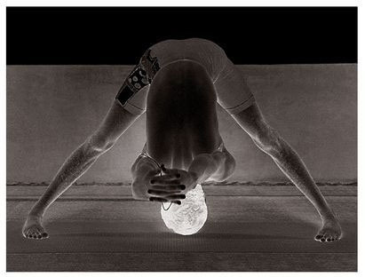
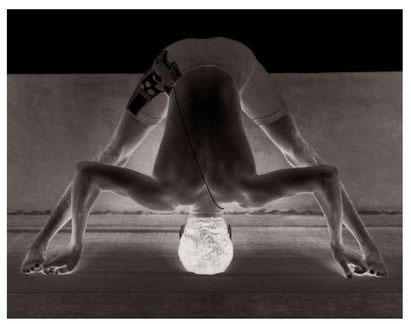

Parshvottanasana has only five vinyasas, the 2nd and 4th of which are the states of the asana. Rechaka and puraka are as in Trikonasana.
METHOD
Jump to the right, standing with the legs three feet apart, as described in Trikonasana, bring hands together behind the back in a prayer position and, doing puraka, turn the right foot and waist to the right, and lift the chest; this is the 1st vinyasa. Then, doing rechaka slowly, touch the nose to the knee without bending the knees, and hold position, doing puraka and rechaka as much as possible; this is the 2nd vinyasa (see figure). Then, doing puraka, lift the head up and turn to face the left, following the method for the 1st vinyasa; this is the 3rd vinyasa. Then, doing rechaka, touch the knee with the nose and hold, while doing puraka and rechaka as much as possible; this is the 4th vinyasa. Then, inhale, lift the head and chest, using the strength of the waist, and stand up straight; this is the 5th vinyasa. Then, Samasthiti.
PRASARITA PADOTTANASANA (C)

PRASARITA PADOTTANASANA (D)

BENEFITS
Like Prasarita Padottanasana, Parshvottanasana eliminates the bad fat at the waist, which makes the lower abdomen thin, the waist strong, and the body light.
IN SHORT, ALL THE ASANAS DESCRIBED ABOVE LOOSEN THE LIMBS OF THE BODY, which aids movement and renders the practice of subsequent asanas easier. They can be done by men and women of all ages. For people suffering from rheumatic or joint pain, the first and second Surya Namaskara and first six asanas are especially important. Done properly with rechaka and puraka, they eliminate the pain that occurs in the joints, and help the body to become light and healthy. It is very important, however, that the particulars of the vinyasas above be kept in mind during practice by those who are weak or ill. As these are very difficult to convey to aspirants, however much the correct method for doing the asanas is described, it is better that they learn them from a Guru first, and then practice them.